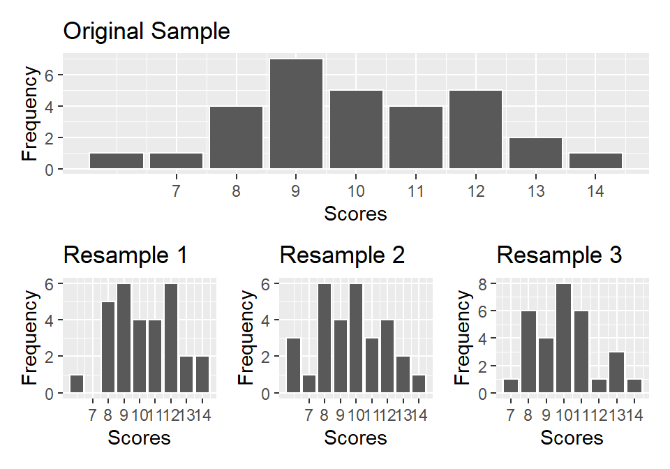
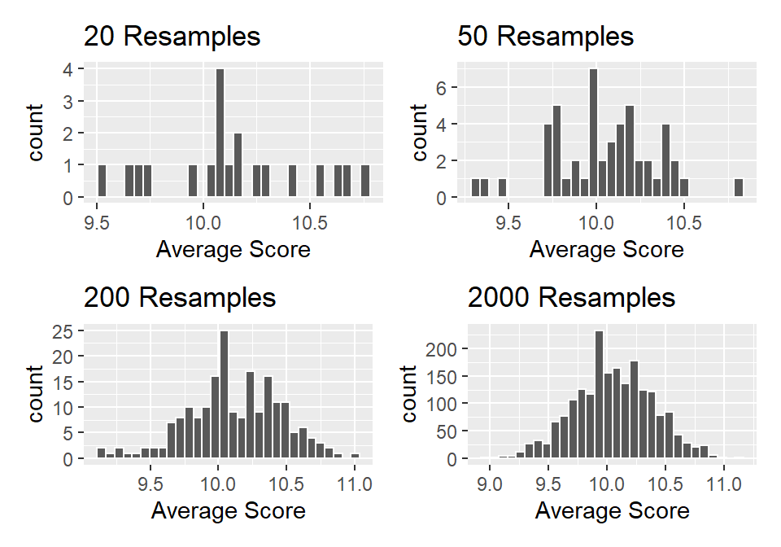
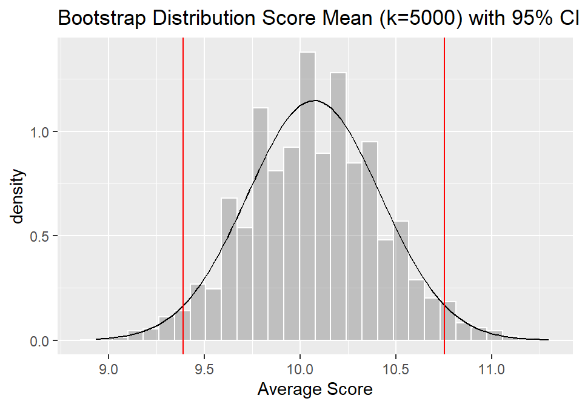

Lecture 12: Bootstrapping
Data Analysis for Psychology in R 1
Tom Booth
Today
- Discuss what makes a good sample
- Introduce bootstrapping
- Introduce confidence intervals
Learning objectives
- Understand key features of good samples
- Understand the principles of how bootstrap resampling works
- Understand how to calculate bootstrap confidence intervals
- Understand how to interpret bootstrap confidence intervals
Features of samples
- Is our sample…
- Biased?
- Representative?
- Random?
Good samples
- If a sample of \(n\) is drawn at random, it will be unbiased and representative of \(N\)
- Our point estimates from such samples will be good guesses at the population parameter.
- Without the need for census.
The class…
- Think about the exercise last week.
- Our sampling distribution of n=10 from the class had a much lower mean proportion than the university as a whole.
- This might lead us to question whether our class is representative of the population.
Recap on sampling distributions
- We have a population.
- We take a sample of size \(n\) from it, and calculate our statistic
- The statistic is our estimate of the population parameter.
- We do this repeatedly, and we can construct a sampling distribution.
- The mean will be a good approximation to the population parameter.
- The variation we can quantify with the standard error.
What is wrong?
- This process allows us to get an estimate of the sampling variability.
- Can I really go out and collect 1000 samples from my population?
- So how else can I get a sense of the variability in my sample estimates.
So what can we do?
- In most practical situations, we do have a sample of data.
- Answer: in much the same way as I sampled repeatedly from the population, I can resample from my data.
Resampling (1)
- Suppose I have a sample \(n\)=30, with test scores:
- I randomly sample one person and note down their score.
- I put that person “back in the pool” (i.e. I sample with replacement)
- Then I draw one person at random again, note down their score, and replace them.
- And I repeat, until I have \(n\)=30.
Resampling (2)
- I now have a new dataset with the same \(n\) as the original.
- I can calculate any statistic on this resample
- Say the mean of the scores.
- If I repeat this whole process many times, say k=1000, I will have a distribution of means from the resampled data.
- Note this is entirely derived from the original sample.
Bootstrapping
- What I have just described is called bootstrapping
- The process of resampling with replacement from the original data to generate a multiple resamples of the same \(n\) as the original data.
- The resultant distribution of statistics calculated on this data is a bootstrap distribution
Visualizing resamples

- Here we have the frequency distribution of three resamples.
Bootstrap distribution
- So now let’s calculate a statistic in the resamples.
- Let’s take different numbers of resamples, calculate the mean test score, and plot the distribution.
- Note, this is just the same exercise as we did with samples from the population last lecture.
Bootstrap distribution

Bootstrap Standard Error
- Last lecture we spoke about the standard error as the measure of sampling variability.
- We stated that this was just the SD of the sampling distribution.
- In the same vein, we can calculate a bootstrap standard error.
- This is simply the SD of the bootstrapped distribution.
Bootstrap vs sampling
- If I generate enough resamples, then the distribution of the statistics from the resamples will approximate a sampling distribution.
- Why is bootstrap useful?
- All we need is our sample!
- If we have a sample, we can estimate the variation/error in our sample estimates.
- This makes the procedure very general.
- But what is it useful for?
- One use is in calculating confidence intervals.
Confidence interval
- Remember, usually we do not know the value of a population parameter.
- We are trying to estimate this from our data.
- A confidence interval defines a plausible range of values for our population parameter.
- To estimate we need:
- A confidence level
- A measure of sampling variability (e.g. bootstrap SE).
Confidence interval & level
- Definition: across repeated samples, [x]% confidence intervals would be expected to contain the true population parameter value.
- [x]% = the confidence level.
- So for a 95% confidence interval (most common in the literature):
- Across repeated samples, 95% of confidence intervals would be expected to contain the true population parameter value.
Simple Visualization

- The confidence interval works outwards from the centre
- As such, it “cuts-off” the tails.
- E.g. the most extreme estimates will not fall within the interval
Calculating CI
- We want to identify the upper and lower bounds of the interval (i.e. the red lines from previous slide)
- These need to be positioned so that 95% of the resamples mean estimates fall within the bounds.
- We could work this out every time.
- But we actually do not need to.
- Remember when I said that the sampling (and bootstrap) distributions become normal…
Calculating CI
- There are fixed properties of normal distributions.
- Specifically:
- 68% of density falls within 1 SD of the mean
- 95% of density falls with 1.96 SD of the mean
- 99.7% of density falls within 3 SD of the mean
- Remember the standard error = SD of the bootstrap (or sampling distribution)…
Calculating CI
- … the bounds of the 95% CI are:
\[
Upper Bound = statistic + 1.96*SE
\] \[
Upper Bound = statistic - 1.96*SE
\]
Summary
- Good samples are representative, random and unbiased.
- Bootstrap resample is a tool to construct a bootstrap distribution of any statistic which, with sufficient resamples, will approximate the sampling distribution of the statistic.
- Confidence intervals are a tool for considering the plausible value for an unknown population parameter.
- We can use bootstrap SE to calculate CI.
Tasks for this week…
- Finish tasks from last week.
- Reading: Can be found here
- Quiz 12: Sampling and R
- Live now.
- Close Sunday at 17:00
Recommendations of the week